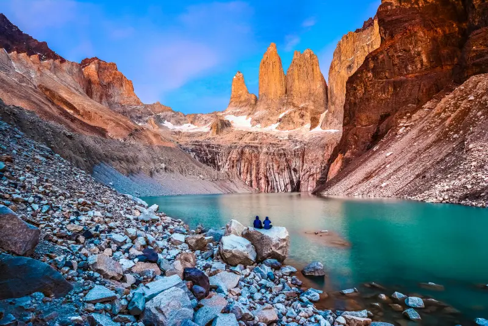
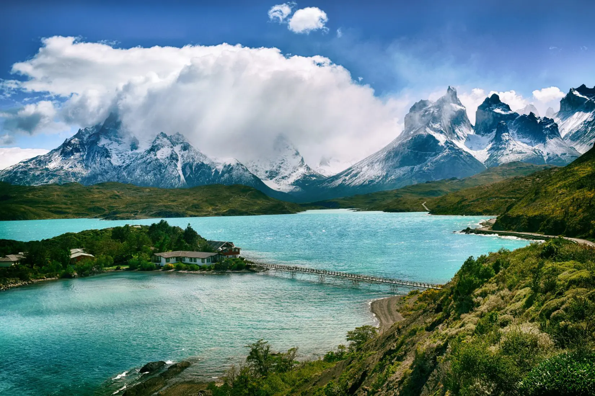
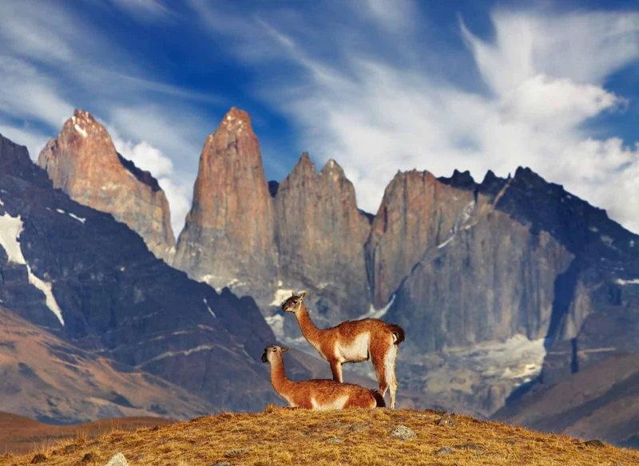
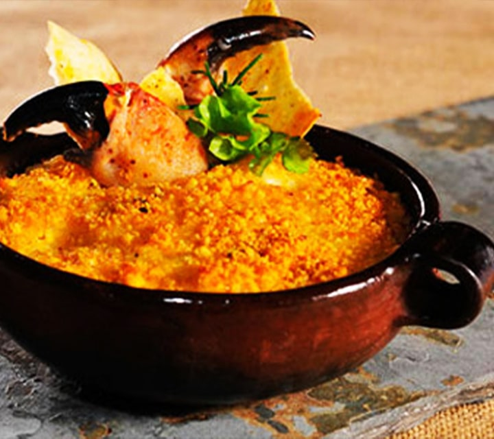

There are places in the world where nature feels untouched, where the landscapes hold stories written in wind and stone. Torres del Paine National Park in Chilean Patagonia is one such place. A land of jagged peaks, glacial rivers, and vast golden plains, this remote wilderness calls out to adventurers, inviting them to walk among its towering wonders and witness the raw beauty of the natural world.
The Iconic Towers at Sunrise
If there’s one moment that captures the essence of Torres del Paine, it’s watching the sun paint the granite spires—Las Torres—with fiery hues. The trek to the base is no easy feat, winding through lenga forests, rocky moraines, and steep ascents. But the reward? An awe-inspiring view of the three colossal towers reflected in a milky blue glacial lake, glowing with the first light of day. It’s a sight that leaves you breathless, not just from the climb, but from the sheer magnitude of nature’s artistry.
Trekking the W and O Circuits
Torres del Paine is a hiker’s paradise, offering legendary trails like the W and O Circuits. The W trek, a multi-day journey through the park’s most stunning highlights, leads adventurers past the French Valley, Grey Glacier, and the famous towers. For those seeking an even deeper immersion, the O Circuit encircles the entire park, revealing hidden valleys, pristine rivers, and views that few ever witness. Along the way, refugios and campsites provide cozy shelters where weary hikers share stories over steaming cups of yerba mate.
Wildlife Among the Peaks and Plains
Beyond the staggering landscapes, Torres del Paine is home to a rich tapestry of wildlife. Herds of guanacos roam the golden grasslands, their alert eyes always scanning for the elusive pumas that prowl the park’s wilderness. Andean condors soar effortlessly on the fierce Patagonian winds, while foxes dart between the underbrush. If you pause long enough, you might even hear the distant thunder of an ice chunk breaking away from Grey Glacier, a reminder of the park’s ever-changing beauty.
Savoring Patagonia’s Flavors
After long days of trekking, nothing beats a hearty Patagonian meal. Whether it’s a warm bowl of cazuela (Chilean stew), a juicy cordero al palo (slow-roasted lamb), or a glass of robust Carménère wine, the flavors of Patagonia are as bold as its landscapes. Sitting by a fire with a plate of food and recounting the day’s adventures with fellow travelers is part of the magic that makes this journey unforgettable.
A Land of Untamed Beauty
Torres del Paine is not just a destination—it’s an experience that stays with you long after you leave. It’s the whisper of the wind through the valleys, the crunch of ice beneath your boots, the feeling of insignificance in the face of towering peaks. It’s a place where nature reigns supreme, where adventure awaits around every bend, and where those who venture into its wild embrace leave forever changed. So if your soul longs for the untamed, for landscapes that challenge and inspire, pack your gear and head to Torres del Paine. The wild heart of Patagonia is waiting.